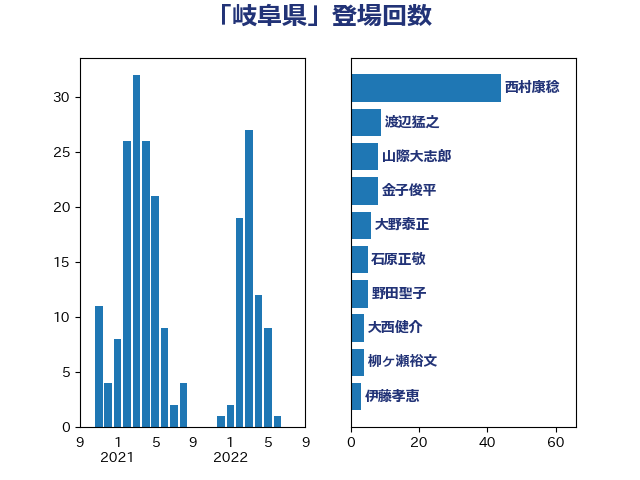

単語「岐阜県」

| 西村康稔 | 自由民主党 | 44 回 |
| 渡辺猛之 | 自由民主党 | 9 回 |
| 山際大志郎 | 自由民主党 | 8 回 |
| 金子俊平 | 自由民主党 | 8 回 |
| 大野泰正 | 自由民主党 | 6 回 |
| 石原正敬 | 自由民主党 | 5 回 |
| 野田聖子 | 自由民主党 | 5 回 |
| 大西健介 | 立憲民主党 | 4 回 |
| 柳ヶ瀬裕文 | 日本維新の会 | 4 回 |
| 伊藤孝恵 | 国民民主党 | 3 回 |
| 古川元久 | 国民民主党 | 3 回 |
| 吉良よし子 | 日本共産党 | 3 回 |
| 本村伸子 | 日本共産党 | 3 回 |
| 赤羽一嘉 | 公明党 | 3 回 |
| 足立敏之 | 自由民主党 | 3 回 |
| 山下雄平 | 自由民主党 | 2 回 |
| 山添拓 | 日本共産党 | 2 回 |
| 岩本剛人 | 自由民主党 | 2 回 |
| 平山佐知子 | 無所属 | 2 回 |
| 斉藤鉄夫 | 公明党 | 2 回 |
| 柿沢未途 | 無所属 | 2 回 |
| 菅義偉 | 自由民主党 | 2 回 |
| 上川陽子 | 自由民主党 | 1 回 |
| 上田英俊 | 自由民主党 | 1 回 |
| 中川康洋 | 公明党 | 1 回 |
| 伊藤渉 | 公明党 | 1 回 |
| 倉林明子 | 日本共産党 | 1 回 |
| 坂本哲志 | 自由民主党 | 1 回 |
| 末松信介 | 自由民主党 | 1 回 |
| 本庄知史 | 立憲民主党 | 1 回 |
| 杉尾秀哉 | 立憲民主党 | 1 回 |
| 杉本和巳 | 日本維新の会 | 1 回 |
| 武田良太 | 自由民主党 | 1 回 |
| 河野義博 | 公明党 | 1 回 |
| 浅野哲 | 国民民主党 | 1 回 |
| 渡辺周 | 立憲民主党 | 1 回 |
| 源馬謙太郎 | 立憲民主党 | 1 回 |
| 田村貴昭 | 日本共産党 | 1 回 |
| 舩後靖彦 | れいわ新選組 | 1 回 |
| 藤井比早之 | 自由民主党 | 1 回 |
| 藤川政人 | 自由民主党 | 1 回 |
| 遠藤良太 | 日本維新の会 | 1 回 |
| 鈴木宗男 | 日本維新の会 | 1 回 |
| 長友慎治 | 国民民主党 | 1 回 |
| 高村正大 | 自由民主党 | 1 回 |
| 高橋光男 | 公明党 | 1 回 |
| 高橋千鶴子 | 日本共産党 | 1 回 |